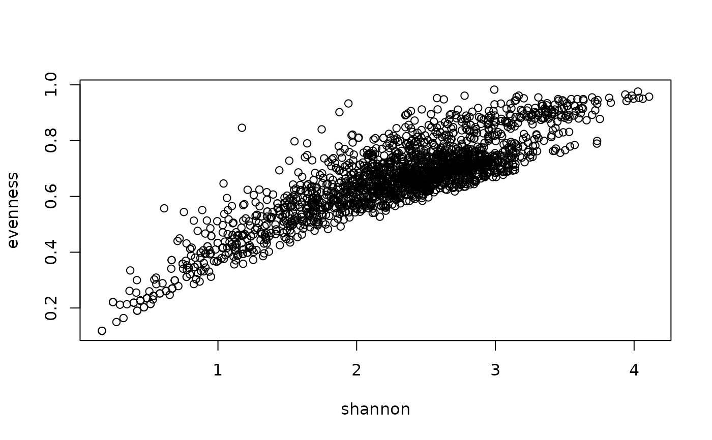

Calculation of diversity statistics at the plot level allowing for customized
functions defined as foo(x, ...), where x is the vector of abundance
values.
This function calls taxa2samples() to derive taxa from taxon usage names in
slot samples and multiple records of species in a single plot will be
merged by stats::aggregate.
The functions shannon(), evenness(), and dominance() calculate the
diversity index of Shannon, the evenness, and the dominance
(1 - evenness), respectively.
Dominance is the complementary value to evenness (i.e. 1 - evenness).
The function simpson() calculates the Simpson's index using the alternative
for vegetation plot observations.
The function richness() counts the number of taxa per plot and can be used
as alternative to vegtable::count_taxa.
Usage
shannon(x, na.rm = TRUE, ...)
evenness(x, ...)
dominance(x, ...)
simpson(x, na.rm = TRUE, ...)
richness(x, na.rm = TRUE, ...)
veg_diversity(object, ...)
# S3 method for class 'vegtable'
veg_diversity(
object,
weight,
FUN = shannon,
aggr_fun = mean,
arg_fun = list(),
var_name,
in_header = TRUE,
...
)Arguments
- x
A numeric vector containing the abundance of single species.
- na.rm
A logical value indicating whether NA values should be removed from the abundance vector or not.
- ...
Further arguments passed among methods. In
'evenness()'and'dominance()', these arguments are passed to'shannon()'. In'veg_diversity()', these arguments are passed toaggregate()(actually to'FUN').- object
A vegtable object.
- weight
A character value indicating the name of the column at slot samples which will be used as species abundance.
- FUN
A function used to calculate the diversity index.
- aggr_fun
A function used to aggregate abundance values for multiple records of a taxon in a plot observation. Average value is used by default.
- arg_fun
A named list with parameters and arguments passed to
taxa2samples(), which will retrieve the respective taxon concept for each taxon usage name and can be used to merge taxa at a determined taxonomic rank, for instance to merge all sub-specific taxa into their respective species (i.e.'merge_to = "species"').- var_name
A character value used as name for the calculated index. If missing, the name of the function will be used.
- in_header
A logical value indicating whether the results should be included as variables in the slot header of the input object. If
'in_header = TRUE', you may assign the result of the function to the input object.
Value
Functions shannon(), evenness(), dominance(), simpson(), and
richness() return a numeric value (the calculated index).
Funtion veg_diversity() produce either a data frame with calculated values
per plot observation (option 'in_header = FALSE') or a vegtable
object with the calculated values inserted in the slot header
(option 'in_header = TRUE').
Examples
## Compare Evenness with Shannon index
Kenya_veg <- cover_trans(x = Kenya_veg, to = "cover")
Kenya_veg <- veg_diversity(object = Kenya_veg, weight = "cover")
Kenya_veg <- veg_diversity(object = Kenya_veg, weight = "cover", FUN = evenness)
with(Kenya_veg@header, plot(shannon, evenness))
